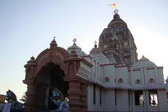
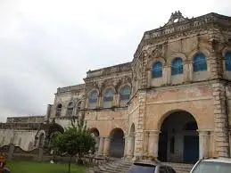
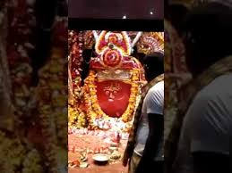
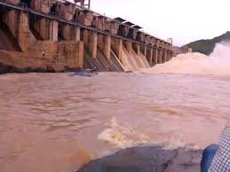
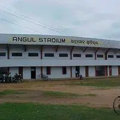

HISTORY
Angul is like a bridge between western and coastal halves of Odisha where the prehistoric and protohistoric relics are found in village Bhimakand, Kankili, Kulei, Samal, Sanakerjang, Kaliakata, Paranga, Kerjang, Tikarapara and Pallahara.The geographical location of Angul made the Bhanjas of Angulaka’pattana, the Sulkis of Kodalaka Mandala, the Nandodbhavas of Airavatta Mandala, the Tungas of Yamagartta Mandala rule over it. But all through the rules of different dynasties, Angul has retained her cultural identity which is much more prominent than its political establishments. After independence Angul became one of the important district in the State of Odisha. Rich cultural heritage, cosmopolitan approach, different temples, natural beauty, dense forest, availability of raw materials in its abode make Angul a major district in 21st century.
GEOGRAPHY
Angul is located at 21.21°N 86.11°E.[2] It has an average elevation of 195 m (640 ft) above sea level. The total geographical area of the district is 6232 km2. From the point of view of area, it stands 11th among the 30 Districts of Odisha. here
DEMOGRAPHICS
As of the 2011 Census of India,[3] Angul had a population of 44,390. Males constitute 55% of the population and females 45%. Anugul has an average literacy rate of 77.53%, higher than the national average of 74.04%; with 58% of the males and 42% of females literate. About 11% of the population is under 6 years of age. There are almost 3-4 Government High Schools are present for Odia Medium Education. Although, A Sishu Vidya Mandir and two Kendriya Vidyalaya Angul Schools are there for children.
SOME FAMOUS PLACES

TALCHER RAJABHABANA

MAA BUDHITHAKURANI

DERJANG DAM

ANGUL STADIUM